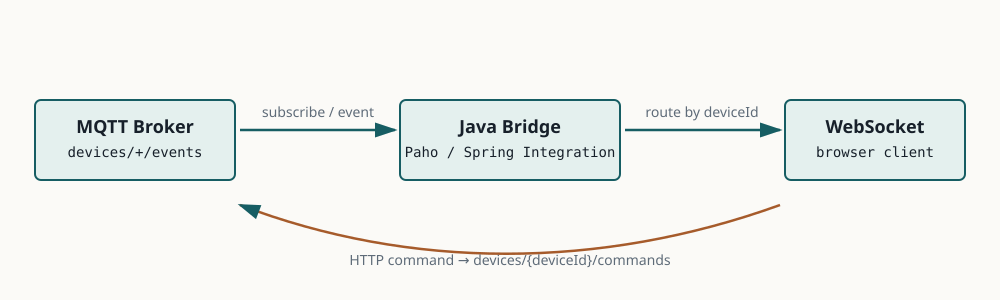

Lesson 0010 · MQTT
把 MQTT 设备事件送到 WebSocket
本课的唯一目标：理解 MQTT Broker、Java 后端和浏览器 WebSocket 各自负责什么，并跑通双向桥接路径。
examples/0010-mqtt-websocket-bridge。项目使用 Mosquitto、Java 25、Spring Boot 4.1.1 和 Paho Java 客户端。1. 三个系统不是同一层

| 组件 | 擅长什么 | 本课职责 |
|---|---|---|
| MQTT Broker | 设备连接、topic、QoS、retain 和会话语义。 | 接收 devices/+/events，转发设备事件。 |
| Java 后端 | 业务鉴权、协议转换、用户/设备关系和服务治理。 | 订阅 MQTT，解析 topic，找到 WebSocket session。 |
| WebSocket | 浏览器与后端之间的双向实时连接。 | 向已连接的设备页面推送事件。 |
2. Topic 映射是桥接的核心契约
MQTT event: devices/device-1/events MQTT command: devices/device-1/commands WebSocket: /ws/devices?device-1
TopicMapper 将设备 ID 映射为固定 topic 结构。它拒绝空白和非法设备 ID，避免把未校验的输入直接拼进 MQTT topic。
设备上报事件的路径是 MQTT → Java → WebSocket；业务下发命令的路径是 HTTP → Java → MQTT。两条路径的可靠性、权限和失败处理不能混为一谈。
3. 源码导读：Paho 回调如何到达浏览器
MqttBridgeService.start
├─ MqttClient.connect
└─ subscribe("devices/+/events")
↓ MQTT callback
TopicMapper.deviceIdFromEventTopic
↓
DeviceConnectionRegistry.sendToDevice
↓
WebSocketSession.sendMessage
MqttCommandController.publish
└─ MqttBridgeService.publishCommand
└─ devices/{deviceId}/commands
MqttBridgeService负责 MQTT 连接、订阅和发布；DeviceConnectionRegistry只负责本 JVM 内的 WebSocket 连接目录；两者之间通过 topic 中的 device ID 对接。
本示例直接使用 Paho，让连接和回调清楚可见。Spring Integration MQTT 可以把同一边界封装成 inbound/outbound adapter 和 Spring MessageChannel，但不会替你决定 topic、QoS、重试、授权或背压。
4. MQTT 语义不能被 WebSocket 自动继承
- MQTT QoS 1 可能重复投递；WebSocket 客户端需要唯一 ID 和幂等处理。
- MQTT retain 是 Broker 的保留消息语义，不等于 WebSocket 离线消息。
- MQTT 会话、订阅和 WebSocket session 是两套生命周期。
- 一个慢 WebSocket 客户端不能无限阻塞 MQTT 回调线程，需要队列、超时和丢弃策略。
5. 运行和验证
cd examples/0010-mqtt-websocket-bridge mvn test docker compose up --build
- 浏览器连接
ws://localhost:8080/ws/devices?device-1。 - 向 Mosquitto 发布
devices/device-1/events。 - 确认浏览器收到 MQTT Payload。
- 调用 HTTP 命令接口，确认返回的 topic 是
devices/device-1/commands。 - 查看 app 和 mqtt 容器日志，区分连接失败、订阅失败和 WebSocket 路由失败。
6. 失败案例
| 现象 | 根因方向 |
|---|---|
| MQTT 有消息但浏览器无消息 | 检查 topic 结构、device ID、WebSocket 连接目录和发送异常。 |
| 应用启动时连接 Broker 失败 | 检查 Broker 地址、Compose 服务名、端口和启动顺序；生产要有重连和就绪策略。 |
| 同一事件浏览器收到两次 | 检查 MQTT QoS、重连重订阅和 WebSocket 客户端幂等。 |
| 某个浏览器拖慢所有设备事件 | 检查 MQTT 回调线程是否同步写 WebSocket，增加隔离队列和慢客户端策略。 |
7. 练习：先回忆，再验证
运行示例后回答下面 4 个问题：
- 为什么 MQTT Broker 不能直接替代浏览器 WebSocket？
查看答案
浏览器业务通常需要 HTTP/WebSocket 鉴权、用户会话和前端友好的连接模型；MQTT Broker 面向 topic 和设备消息，不负责你的用户业务授权和页面连接管理。
- 为什么桥接代码必须校验 topic 和 device ID？
查看答案
topic 是路由契约，未经校验的输入可能把事件路由到错误设备或形成非法订阅/发布路径；校验还限制了资源和权限边界。
- QoS 1 为什么要求 WebSocket 侧考虑幂等？
查看答案
QoS 1 目标是至少一次投递，重试可能产生重复消息。桥接和客户端需要事件 ID、序列号或去重策略。
- 为什么不能在 MQTT 回调线程里无限等待慢 WebSocket？
查看答案
回调线程被阻塞会拖慢其他 MQTT 消息，最终扩大延迟和堆积。应使用有界队列、超时、隔离执行器和明确的丢弃/降级策略。
快速检查：本桥接中 MQTT topic 的主要作用是什么？